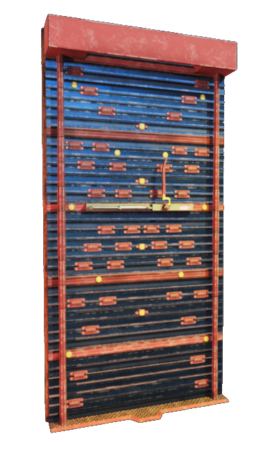

Before attackers begin their assault, defenders can place reinforcements and set up on the objective. Since the environment is destructible (including floors, walls, windows, and doors), all defenders have 2 metal reinforcements which cover either a wall or a hatch to prevent attackers from being able to break them. These reinforcements cannot be broken by any normal guns or breaching rounds. Normal wooden reinforcements have no limit and can be placed on any window or doorway, but these can be shot down or broken easily. Defenders can shoot drones to stop the attackers from locating the objective. Drones can watch defenders and mark their location so it is beneficial for defenders to not allow drones near them or the objective. Cameras are available to defenders which are in preset locations throughout the map. At any time, they can view the cameras and "scan" enemy locations similar to drones, but attackers can also shoot to destroy cameras.
In ranked, defenders can choose the area on the map they want to defend, otherwise it is random. Once attackers are deployed, defenders await their arrival. The timer then begins: 4 minutes for normal matchmaking and 3 minutes for ranked matchmaking. Defenders have this time to stop attackers from completing their objective based on which game mode it is (see Game Mode section in home page for explanation). Every defender has a unique gadget or ability they can use to aid in their defensive. Defenders can also equip a choice of 2 from: barbed wire x2 (slows down attackers and makes noise when walked through), deployable shields x1, nitro cells x1 (explodes on button press), or impact grenades x2. If a defender runs outside of the map, they have 2 seconds until they are detected by all attackers; their icon will then be live tracking them until they go back inside.
Smoke Bio: Smoke was born on May 14, 1981 in London, England. His real name is James Porter and he is part of the SAS (Special Air Service of the British Army). His height is 5'8" and he weighs 154 lbs.
Gadget:Remote Gas Grenade x3: Smoke has the ability to toss a remote detonated toxic gas charge. These grenades can latch onto a surface and detonate at any moment. Smoke is immune to his own gas, but other operators (including other defenders) are not. The smoke does 15 points of damage for every half-second someone is standing in it.
Stats: Armor Rating: ● ● ○
Speed Rating: ● ● ○
Mute Bio: Mute was born on October 11, 1991 in York, England. His real name is Mark R. Chandar and he is part of the SAS (Special Air Service of the British Army). His height is 6'1" and he weighs 176 lbs.
Gadget:Signal Disruptor x4: Mute has the ability to place a signal disruptor on the floor which jams communications for both drones and any remote detonated gadgets within its range. Any drones will get a static effect if they are near one and go completely dark if they get too close. Any remotely controlled or detonated electronics will not be able to go off. Jackal's headset(?) and Blitz's flash charges(?) will be jammed as well.
Stats: Armor Rating: ● ● ○
Speed Rating: ● ● ○
Castle Bio: Castle was born on September 20, 1980 in Sherman Oaks, California. His real name is Miles Campbell and he is part of the FBI SWAT (FBI Special Weapons and Tactics Teams). His height is 6'1" and he weighs 210 lbs.
Gadget:Armor Panel x3: Castle has the ability to place more than just a wooden reinforce in a doorway or window. His armor panels can be placed on any doorway or window to block bullets from enemy fire. They can be broken by breach charges, Sledge hammer(?), 12 shots from Glaz(?), or Ash's breaches(?). It takes 12 melee attacks for other operators to destroy otherwise.
Stats: Armor Rating: ● ● ○
Speed Rating: ● ● ○
Pulse Bio: Pulse was born on October 11, 1984 in Goldsboro, North Carolina. His real name is Jack Estrada and he is part of the FBI SWAT (FBI Special Weapons and Tactics Teams). His height is 6'2" and he weighs 187 lbs.
Gadget:Heartbeat Sensor: Pulse has the ability to equip a portable device that tracks nearby heartbeats, including through walls. The sensor will beep when a heartbeat is detected and get louder as the distance between Pulse and the target decreases. He cannot shoot while using the sensor.
Stats: Armor Rating: ● ○ ○
Speed Rating: ● ● ●
Doc Bio: Doc was born on September 16, 1977 in Paris, France. His real name is Gustave Kateb and he is part of the GIGN (Groupe d'Intervention de la Gendarmerie Nationale, English: National Gendarmeria Intervention Group). His height is 5'9" and he weighs 174 lbs.
Gadget:Stim Pistol: Doc can equip a special pistol that will shoot a 1mg dose of epinephrine in saline solution towards any other operator (including attackers). This shot heals the operator for 40 health or will revive a player who is downed with 75 health instead of 50. He can heal and revive himself by injecting the stim into himself. The stim shot also works on the hostage. If an operator is at full health, they will be "overhealed" to a maximum of 140 health which will slowly decay back to 100 health. This does not take the place of either his primary or secondary gun.
Stats: Armor Rating: ● ● ●
Speed Rating: ● ○ ○
Rook Bio: Rook was born on January 6, 1990 in Turs, France. His real name is Julien Nizan and he is part of the GIGN (Groupe d'Intervention de la Gendarmerie Nationale, English: National Gendarmeria Intervention Group). His height is 5'9" and he weighs 158 lbs.
Gadget:Armor Pack x1: Rook has the ability to place a pack of armor for all the defenders, 5 armor plates in a pack (1 for each defender). These armor plates can be equipped to give each operator 20% damage resistance. It also guarantees that someone wearing one will be downed instead of killed unless they get hit by something lethal (explosions, headshot). Being downed once removes the armor plate. If a defender does not equip an armor plate, attackers can equip them if left on the ground or defenders can destroy them to not allow defenders to take them.
Stats: Armor Rating: ● ● ●
Speed Rating: ● ○ ○
Kapkan Bio: Kapkan was born on May 14, 1979 in Kovrov, Russia. His real name is Maxim Basuda and he is part of the Spetsnaz (Russian Special Purpose Forces). His height is 5'10" and he weighs 176 lbs.
Gadget:Entry Denial Device x5: Kapkan has the ability to install booby traps on windows and door frames. He can choose to mount them low or high in the frame. Anyone passing through the frame will trigger the tripwire, causing it to explode for 60 damage. Doors and windows can still be barricaded over while a trap is in it. The traps are visible but hard to notice while the tripwire is completely invisible.
Stats: Armor Rating: ● ● ○
Speed Rating: ● ● ○
Tachanka Bio: Tachanka was born on November 3, 1967 in Saint Petersburg, Russia. His real name is Alexsandr Senaviev and he is part of the Spetsnaz (Russian Special Purpose Forces). His height is 6'0" and he weighs 189.5 lbs.
Gadget:Mounted LMG: Tachanka can set up a modified RP-46 machine gun mounted on a stand to give full range of motion and a frontal shield. This gives him sustained fire with a large ammo capacity, but he is stationary. Once deployed, anyone can use the LMG including attackers. This does not take the place of either his primary or secondary gun.
Stats: Armor Rating: ● ● ●
Speed Rating: ● ○ ○
Jäger Bio: Jäger was born on March 9, 1978 in Düsseldorf, Germany. His real name is Marius Streicher and he is part of the GSG 9 (Grenzschutzgruppe 9 der Bundespolizei, English: Border Protection Group 9 of the Federal Police). His height is 5'10" and he weighs 152 lbs.
Gadget:Active Defense System (ADS) x3: Jäger can place small
Active Defense Systems (ADS) that intercept any live grenades or projectiles that are thrown. They can be placed vertically or horizontally. Each ADS can intercept 2 projectiles, destroying them, before shutting down.
Stats: Armor Rating: ● ○ ○
Speed Rating: ● ● ●
Bandit Bio: Bandit was born on August 13, 1974 in Berlin, Germany. His real name is Dominic Brunsmeier and he is part of the GSG 9 (Grenzschutzgruppe 9 der Bundespolizei, English: Border Protection Group 9 of the Federal Police). His height is 5'10" and he weighs 149 lbs.
Gadget:Shock Wire x4: Bandit can place small electrical devices which emit electric charge through metal, shocking those who come in contact and destroying any gadgets that come in contact. There is a visual display if something is being shocked. The shocks will prevent any breaching charges including Thermite(?) and Hibana(?) as they get destroyed instantly upon being placed on an electrified surface. He can place a Shock Wire on barbed wire, reinforced walls, and deployable shields. Bandit can also accidentally destroy allied electronics if they are placed too close.
Stats: Armor Rating: ● ○ ○
Speed Rating: ● ● ●
Frost Bio: Frost was born on May 4, 1985 in Vancouver, British Columbia. Her real name is Tina Lin Tsang and she is part of the JTF2 (Joint Task Force 2 of the Canadian Forces). Her height is 5'7" and she weighs 128 lbs.
Gadget:Welcome Mat x3: Frost can place a mechanical trap that incapacitates enemies. The trap is non-lethal and only downs enemies that walk into it regardless of their health. Being downed in a mat means you cannot move or slow down bleeding out. The mat is mechanical so it does not count as an electronic meaning it is unaffected by Thatcher(?) and IQ's(?) gadgets.
Stats: Armor Rating: ● ● ○
Speed Rating: ● ● ○
Valkyrie Bio: Valkyrie was born on July 21, 1986 in Oceanside, California. Her real name is Meghan J. Castellano and she is part of the Navy SEALs (United States Sea, Air, and Land Teams). Her height is 5'7" and she weighs 134 lbs.
Gadget:Black Eye x3: Valkyrie has the ability to place her own cameras Gyro Cam Mk2 or "Black Eye" cameras. They act the same as normal camerasand are viewable to all of the defenders. They have a wider field of view than normal cameras (360°) and have a blue tint when viewing. Cameras can be thrown to stick to all surfaces such as floors, walls, or any objects in the map. They can be shot and destroyed by attackers just as normal cameras.
Stats: Armor Rating: ● ● ○
Speed Rating: ● ● ○
Caveira Bio: Caveira was born on October 15, 1989 in Rinópolis, Brazil. Her real name is Taina Pereira and she is part of the BOPE (Batalhão de Operaçõ es Policiais Especiais, English: Military Police of Rio de Janeiro State in Brazil). Her height is 5'10" and she weighs 160 lbs.
Gadget:Silent Step and Interrogation: Caveira has a stealth mobility technique that allows her to sprint without making footstep sounds known as "Silent Step". Silent Step also hides her from being Jackal(?) tracked. Her other ability is Interrogation, allowing her to interrogate a downed attacker. This gives all defenders live vision of all attackers positions for 10 seconds. Caveira has a special secondary hand gun "Luison" that is guaranteed to down enemies when shot at, even if headshot. This gives Caveira the synergy to down and interrogate an enemy without worrying about killing them. While in Silent Step, only her secondary can be equipped.
Stats: Armor Rating: ● ○ ○
Speed Rating: ● ● ●
Echo Bio: Echo was born on October 31, 1980 in Suginami, Tokyo. His real name is Masaru Enatsu and he is part of the SAT (特殊急襲部隊; Tokushu Kyūshū Butai, English: Special Assault Team under the Japanese National Police Agency). His height is 5'11" and he weighs 158 lbs.
Gadget:Yokai x1: Echo carries a small hovering drone called "Yokai". Yokai can be deployed and transmit a video feed to Echo, similarly to a regular drone. The drone can swiftly hover around the floor but cannot jump the way a normal drone does. If Yokai jumps, it jumps all the way to the ceiling and sticks there, immobile. While on the ceiling, it engages in an active cloaking system slowly camouflaging it into the ceiling. Also while on the ceiling, Yokai has the ability to send a supersonic blast towards any targets. There are a max of 3 charges of this burst which refill every 10 seconds. If the drone goes outside, it will be deactivated after 3 seconds of not coming inside again.
Stats: Armor Rating: ● ● ●
Speed Rating: ● ○ ○
Mira Bio: Mira was born on November 18, 1977 in Madrid, Spain. Her real name is Elena María Álvarez and she is part of the GEO (Grupo Especial de Operaciones de Spanish Cuerpo Nacional de Policía, English: Special Operations Group of the Spanish National Police Corps). Her height is 5'5" and she weighs 132 lbs.
Gadget:Black Mirror x2: Mira has the ability to insert bulletproof mirrors onto walls (including reinforced walls). The mirror only goes one direction, so operators looking in from the other side cannot see through. Mirrors will pop out if the air pressure holding it in below it is broken, leaving both sides vulnerable to the newly made hole. The mirror can pop out from an instance of damage on the pressurized canister by a melee attack, a bullet, or a Twitch shock(?).
Stats: Armor Rating: ● ● ●
Speed Rating: ● ○ ○
Lesion Bio: Lesion was born on July 2, 1972 in Junk Bay(Tseung Kwan O), Hong Kong. His real name is Liu Tze Long and he is part of the SDU (特別任務連 (nicknamed 飛虎隊 Flying Tigers), English: Special Duties Unit in Hong Kong). His height is 5'9" and he weighs 181 lbs.
Gadget:Gu Mines x7: Lesion can place very small mines that inject toxic compounds which deal 10 damage to attackers and limits their speed. After the initial 10 damage, the needle must be Gu pulled out or it will continue to do 8 damage every 2 seconds until removed. This effect does not stack but the initial damage does. The injection causes anyone affected to be unable to sprint and a visual distortion. The mines are camouflaged and practically invisible but can be destroyed the same as any electronics. Lesion only starts with one mine, getting one mine refilled every 35 seconds for a maximum of 7.
Stats: Armor Rating: ● ● ○
Speed Rating: ● ● ○
Ela Bio: Ela was born on November 8, 1985 in Wrocław, Poland. Her real name is Elżbieta Bosak and she is part of the JW GROM (Jednostka Wojskowa Grupa Reagowania Operacyjno-Manewrowego, English: Group for Operational Maneuvering Response). Her height is 5'8" and she weighs 150 lbs.
Gadget:Grzmot Mine x3: Ela has the ability to toss concussion proximity mines that can stick to any surface. The concussion impairs hearing and causes a dizzy on-screen effect. Attackers detonate the mine when coming close by. Anyone walking near the mine is affected by the concussion blast, including defenders, but only attackers cause it to pop. Both her and her sister Zofia(?) are resistant to the concussion effect. When downed, Ela can manually detonate one more charge held in reserve on herself (does not count as 1 of her 3 charges).
Stats: Armor Rating: ● ○ ○
Speed Rating: ● ● ●
Vigil Bio: Vigil was born on January 17, 1984. He does not remember his birthplace. His real name is Chul Kyung Hwa and he is part of the 707th SMB (Hangul: 제707특수임무대대, Hanja: 第707特殊任務大隊, English: 707th Special Mission Battalion in the Republic of Korea Army Special Warfare Command). His height is 5'8" and he weighs 161 lbs.
Gadget:ERC-7 (Electronic Rendering Cloak): Vigil has the ability to cloak himself from all drones. His Electronic Rendering Cloak scans his surroundings and wipes his image from all cameras and drones. Thatcher(?) can temporarily disable his cloak if hit with an EMP. Vigil will be completely invisible if he is in a drone or camera's field of view. The drone will have an effect on the edges of the screen if it is near a cloaked Vigil.
Stats: Armor Rating: ● ○ ○
Speed Rating: ● ● ●
Recruit
Not picking any of the above operators on attack will select "recruit" by default who can equip any of the other types of guns but does not have a gadget like the other operators. He also cannot use attachments for his guns so willingly picking recruit is never a good option. He isn't technically an operator and more of a default if no other operators are available or were not chosen at the start of the round.


 Rook
Rook
 Echo
Echo
 Recruit
Recruit